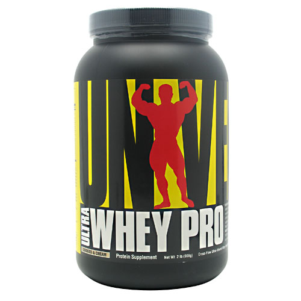

Información de Ultra Whey Pro :
Ultra Whey Pro proporciona una fuente de sólo las proteínas de suero de leche de más alta
calidad excelente y completa. Cada cucharada proporciona 22 gramos de proteínas derivadas de nuestro suero
de leche pura, mezcla de proteína, una matriz única compuesta de suero de leche ultrafiltrada
aislamientos, hidrolizados de suero péptido y concentrado de suero. Para máximo valor biológico (BV),
Ultra Whey Pro ha sido ultrafiltrado y procesado a las temperaturas más bajas posibles para evitar la
desnaturalización de la proteína. Cada cucharada de Ultra Whey Pro es el poder lleno de micro-fracciones
biológicamente activas, ofreciendo una gama completa de aminoácidos para alimentarse los músculos que trabajan duro.
Ultra Whey Pro entrega no solo entrega calidad, sino que también
ofrece el sabor. El especializado Proteína pura mezcla de suero de leche en Ultra Whey Pro ha sido instantized
para disolver rápidamente en su bebida favorita de elección. Con una cuchara, agitador, o licuadora, usted
puede mezclar rápidamente un gran batido de proteínas de degustación